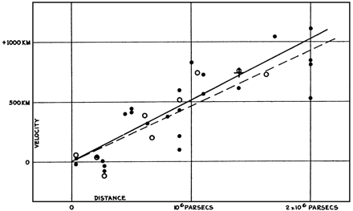
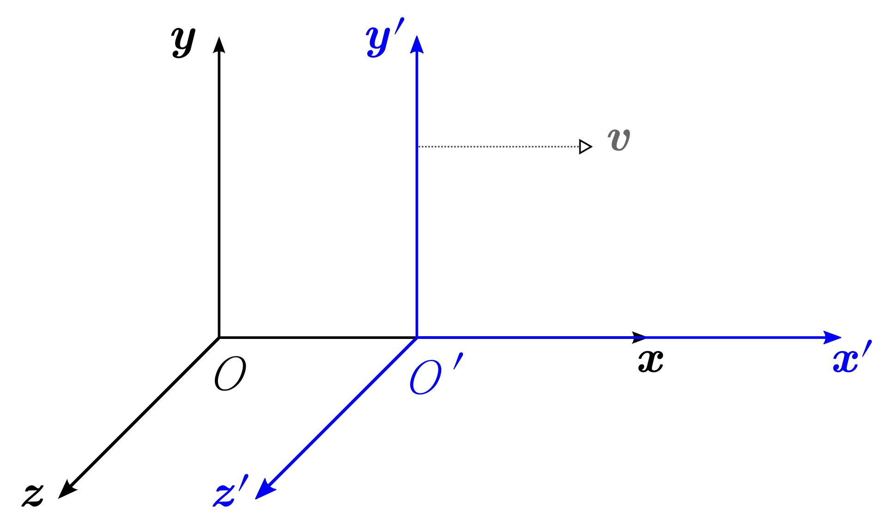

Problem set 2 is online in Canvas, due Tuesday 17 November, 10:00.
Lecture slides: the lectures are also available as PDFs in Canvas.
Recap
From last time

E. Hubble (1929), PNAS 15, 168
Hubble's law: galaxies show a redshift (recession velocity) proportional to their distance:
$$v = H_0 D$$
Such a relation arises naturally in a universe that is expanding in a homogeneous and isotropic way, described by a scale factor $a(t)$:
$$H_0 = \left.\frac{\dot a}{a}\right|_{t_0}, \qquad 1 + z = \frac{1}{a(t_\text{em})}$$
Goals of this week
The concept of distance in an expanding universe: how to think about and calculate distances, given a function $a(t)$ ← today
What determines the scale factor $a(t)$ of a universe: the Friedmann equations← next lecture
Today's plan
The concept of a metric
Special relativity: space and time are not independent
General relativity and the curvature of spacetime
The Robertson–Walker metric for an expanding universe
Using the Robertson–Walker metric to calculatedistances
Along the streets: $4 + 3 = 7$ blocks Any other route without detours: also $7$ Manhattan metric: $d\ell = |dx| + |dy|$
2 · Special relativity
Special relativity: time and space are not independent
Based on two postulates:
The laws of physics are the same in all inertial (non-accelerating) frames of reference.
The speed of light in a vacuum is the same for all observers, regardless of their relative motion.

Krea, Wikimedia Commons (CC BY-SA 3.0)
Light clock experiment
A clock: light bounces between two mirrors a distance $L$ apart.
At rest: $\Delta t = \dfrac{2L}{c}$
Moving at $v$: the light travels a longer, diagonal path, at the same speed $c$:
$$\left(\frac{c\,\Delta t'}{2}\right)^2 = L^2 + \left(\frac{v\,\Delta t'}{2}\right)^2$$
Observer 1 sees Observer 2's clock tick slowly: time dilation.
With $\Delta x' = v\,\Delta t'$, the distance the clock moves:
$$-c^2\Delta t'^2 + \Delta x'^2 = -c^2\Delta t^2 + \underbrace{\Delta x^2}_{=\,0}$$
They disagree on $\Delta t$ and $\Delta x$, but agree on this combination: space and time are not independent.
Special relativity metric
Observers in different inertial frames do not agree on the time or space separation between events (and sometimes not even on which happened first).
What they will agree on is the spacetime interval between events:
Proper distance at emission: $d_p(t_e) = a(t_e)\,d_p(t_0)$ = Gpc
Light-travel distance: $c\,(t_0 - t_e)$ = Gpc
$H_0 = 68$ km/s/Mpc. The orange curve is the path of the light. For $z > e - 1 \approx 1.7$ it first moves away from us in proper distance: space expands faster than it travels.
Literature topic: space-time diagrams in an expanding universe.
Derive the relation between redshift and scale factor
Show that $\;\displaystyle 1 + z = \frac{\lambda_0}{\lambda_e} = \frac{a(t_0)}{a(t_e)}$
One wave crest leaves the galaxy at $t_e$ and arrives at $t_0$. The next crest leaves at $t_e + \lambda_e/c$ and arrives at $t_0 + \lambda_0/c$.
Both crests travel from the same comoving coordinate $r$:
$$r = c\int_{t_e}^{t_0}\frac{dt}{a(t)} = c\int_{t_e + \lambda_e/c}^{t_0 + \lambda_0/c}\frac{dt}{a(t)}$$
Over a time $\lambda/c$, $a(t)$ hardly changes.
Exercise session
Exercises on cosmological distances: available on Canvas under the Lecture 3 module.
Before next time
Problem set 2 is due Tuesday 17 November, 10:00, in Canvas
Read Ryden chapter 4: cosmic dynamics (the Friedmann equation)
Literature project: first topic choice due Thursday 12 November